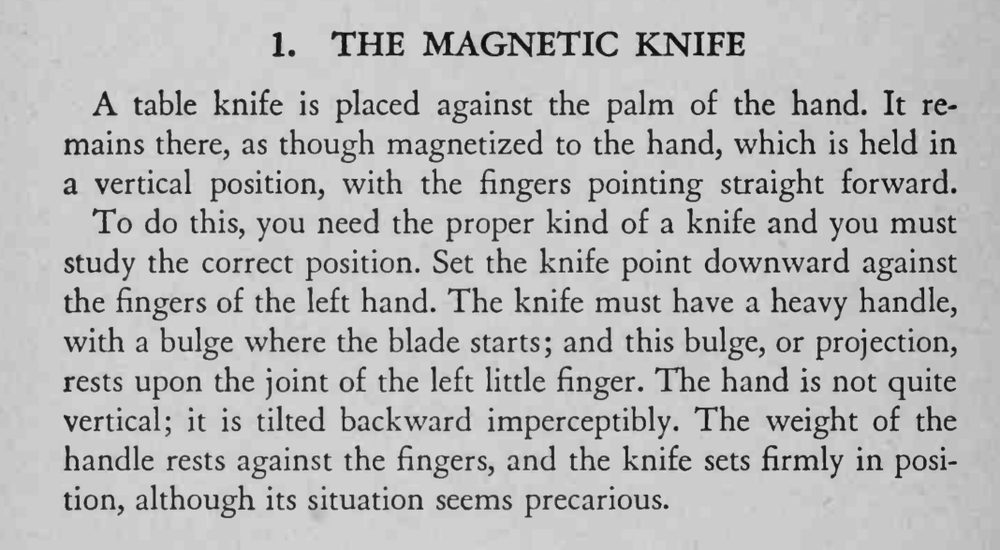

一把餐刀刀尖朝下立在摊开的手掌上，像被磁铁吸住一样稳稳不掉。
关键是凸起正好卡在小指关节、手掌略后仰，位置找对刀就不掉。

table knife is placed against the palm of the hand. It remains there, as though magnetized to the hand, which is held in a vertical position, with the fingers pointing straight forward. To do this, you need the proper kind of a knife and you must study the correct position. Set the knife point downward against the fingers of the left hand. The knife must have a heavy handle, with a bulge where the blade starts; and this bulge, or projection, rests upon the joint of the left little finger. The hand is not quite vertical; it is tilted backward imperceptibly. The weight of the handle rests against the fingers, and the knife sets firmly in position, although its situation seems precarious.